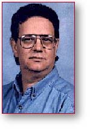
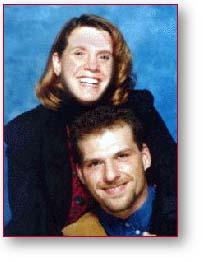
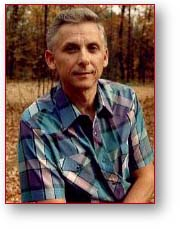
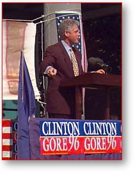
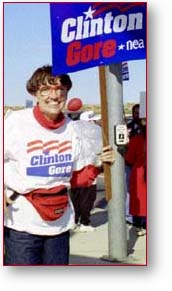

Bo Davis — Arlington, VA“I have been watching the debates and I just want to say that I am extremely impressed by Clinton's ability to stay away from personal attacks. Dole made numerous direct comments and the President kept his composure and stayed on the issues.”
Marty Gallanter — Tyler, MN
 “The October 6th debate will likely go down in history as one of the more substantive Presidential debates in history. It will certainly be recorded as one of the most cordial. The opponents in the November contest showed both their mutual respect for each other and their substantial policy differences.
“No policy surprises were presented to the viewing audience. Everything that either candidate said had been said before, but repetition did not devaluate the opportunity for the voting public to compare positions. Senator Dole, playing on his position as underdog in the polls, attempted to chip away at the Clinton administration successes and did so with little success of his own. The President, who focused heavily on the Dole tax cut, did so almost completely without response from his Republican Challenger who struggled with an adequate explanation as to how America could afford his economic plan. On the other side, the former Senate Majority Leader failed to pierce the President's armor on any issue other than to clarify, even further, the real differences in policy that exist between the candidates.”
Theresa Kmetetz — Enfield, CT
“The President was clearly the better candidate. He was clear on the issues and did not fall trap to Mr. Dole's constant attempt to make the President argue with him and become personal. I am proud of the President.”
Liz Carey — Cincinnati, OH 
“As my husband and I watched the debates, one thing became increasingly clear. President Clinton is serious about the job of being president. His relentless attacks on the issues in the face of constant jokes and personal attacks made it apparent that the man we elected president in 1992 is the man we need to elect president in 1996. His demeanor and style were those of a leader, a man of principle, and a man who is secure in the knowledge that the truth of his presidency will overshadow the lies and vicious assualts he was subjected to. My father once told me that it didn't matter what anyone else said, the truth is always your best defense. For the first time in years of watching political dialogues, I believe that the man I will again vote for as president has the truth on his side.
“Clinton refused to pander to the lowest common level by slandering his opponents record or categorizing his opponenet's political philosophy. President Clinton stuck to what really matters to the American public, the issues, and refrained from falling back on jokes, anecdotes and media sound-bites. From his opening remarks to his closing statements, his debate was on both of the candidates' records not on their personal lives or character.
“As a young person, I listened to both the candidates closing remarks with particular interest. I have listened to the stories of my mother and grandmother, both life-long Democrats. I understand that every generation faces changes never before imagined by the previous generation. President Clinton recognizes that fact and looks to build a bridge for all of us to succeed in the face of both economic and technological change. His opponent seems to think that we, as young people, haven't the sense to realize that age equals change. President Clinton gave us a vision for the future. Senator Dole tripped over his view of the past.
“As far as we could see, there was only one candidate at the debates actually concerned with the issues. The other candidate seemed more concerned with swaying the Perot swing vote, and ingratiating himself with the American public. The candidates who won the debate was Bill Clinton, the only man who clearly needs to be the next president of the United States.
Aaron Laws — Davis, CA
“President Clinton responded to Senator Dole's constant attacks on policy and character with tact and composure. I am proud to continue to support and endorse President Clinton.”
Kelly Gomas — New Port Richey, FL

“To me the issues boil down to this. Bill Clinton represents reality and Bob Dole represents promises. Clinton stands on an impressive record of concrete achievements which truely represent progress and a betterment of the American way of life. While Dole can only stand on the ether of promises. I think Bob Dole is a respectable candidate and I am sure he at least gained some notariety as a result of the debate. But I also believe the President has had a great chance to articulate his vision for America and to answer some of Bob Doles criticisms.
“On the surface,Bob Dole's appeal "how would you like 1,235 dollars in your pocket — Elect me and its yours — may appeal to some but the President's more realistic, less budget deficit threatening, targeted tax break has more appeal to the sensible amoung us. I personally would not change a President with a proven record for verbal promises of another aspirant to his office. If Bill Clinton were the CEO of the company called America as a stockholder I would speak out for him and say he is more than giving us our moneys worth!”
Barry House — Pittsfield, IL
“I support Bill Clinton because his plan WILL take us into the 21st century on a strong, forward-looking path. ”
Joan Seibenick — Ann Arbor, MI
 “It can really be summed up in two simple words future and past.
“Bob Dole was consistently refocusing conversation to the past. And not just the past four years that Bill Clinton has served as our President, I am talking about the 1950s, the 1980s.every era but the one in which we are living. When referring to the past four years, Mr. Dole was hard pressed to come up with negative statistics. He said that the economic growth slowed under Clinton. During Clintons administration, growth has been steady and positive. The welfare roles have been cut, unemployment has dropped, the deficit has decreased. Dole blamed Clinton for the increase in drug use. Clinton is the only U.S. President to ever appoint a drug czar to fight the use of drugs. Mr. Clinton has dramatically increased funding to fight drugs.
“Mr. Dole tended to focus on the negatives. He kept talking about how many things are "wrong" with our country. The truth is that our country is better off today than it has ever been. Mr. Dole made me feel that I should be embarrassed to be an American. I am definitely NOT embarrassed to be a citizen of this great country. Mr. Dole could not use any of his answer, rebuttal or response time to talk about the future or to set positive and hopeful expectations. Instead, he would attack President Clinton and his administration.
“Bill Clinton, on the other hand, took the high road. He spoke respectfully of Mr. Dole and always referred to the future when answering questions. He spoke to his record when he had to, gave credit to others who had helped him attain success and then moved on to speak of his plan for the 21st century. He spoke so that we could feel proud of being an American. He was honest, open and humorous. He made me feel safe with our country in his hands. His genuineness was obvious. At one point, he thanked the citizens of this country for allowing him to have this job. He said he never dreamed that something so great could happen to him. Well, Bill, that is what our country is all about. Thats why we call it the "American Dream". Thanks to you, we can feel that the dream is safe.
“I agree that Bill Clintons plan for the future is better than Bob Doles. His continued focus on education, crime, welfare and the environment is what our country needs and wants. Mr. Clinton acts when he needs to. His quick action was the cause of the re-opening of the peace talks in the Middle East. He is not afraid to take on the situation in Iraq. He is honest and straightforward. He took on the tobacco and the firearm industries because he felt it was the right thing to do. We all know how hard that can be in the face of special interests in Washington.
“I think that President Clinton wants our lives to be better. I think he is realistically forward-looking. We cannot spend time dwelling on the past. We must focus our energies on the future. I am looking forward to my future and the future of my son. That is why I will be proud to vote for the Clinton/Gore team this November 5th.”
Tarja Black — Los Angeles, CA

“I don't have television. So, I listened to the debate on radio. In that medium, President Clinton was the clear winner. He talked about the record of his administration -- and America's future; Dole talked about himself -- and the past.
“I know that just listening to a debate can give a different emphasis than actually viewing an event. The Kennedy/Nixon debates are a famous example of this. Radio listeners thought Nixon had won while television viewers gave the nod to Kennedy. I doubt that television could have given Dole a similar edge over Clinton.
“It's hard being a challenger to a president whose economic record includes 10.5 million new jobs, rising incomes, and steadily decreasing federal deficits. Dole realizes this. So, he figures that the only way he can get elected is to dispute Clinton's record of solid achievement. As he in effect said over and over last night, 'Don't believe what you read, see, or hear. Times are tough. So, elect me.' But the American people know better.”
Paid for by Clinton/Gore ’96 General Committee, Inc.